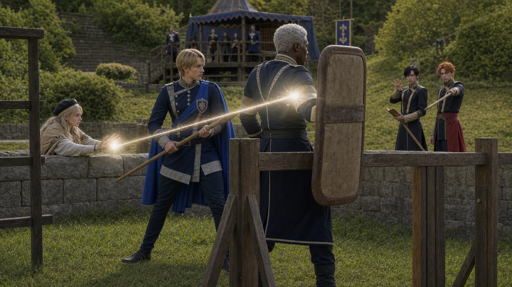

Shot032 keyframe
qa_passed / P1
episodes/EP02/generated/mock_battle_production_keyframes_2026-07-17/Shot032_keyframe.pngDedue 守住 Dimitri

qa_passed / P1
episodes/EP02/generated/mock_battle_production_keyframes_2026-07-17/Shot032_keyframe.png
tall broad guardian, dark skin, white hair, shield-wall posture
assets/characters/blue_lions/Dedue/academy/selected.png
youthful blond Blue Lions prince, training lance, aggressive but controlled
assets/characters/blue_lions/Dimitri/academy/selected.png
dark-haired Black Eagles mage, pressure caster behind front line
assets/characters/black_eagles/Hubert/academy/selected.png
orange-haired noble cavalry student, stabilizes and intercepts Felix
assets/characters/black_eagles/Ferdinand/academy/selected.png
gentle blonde 18-year-old healer, short clean white healing light from cover
assets/characters/blue_lions/Mercedes/academy/selected.pngEstablish the exact geography for Dedue Guards Dimitri: Dedue shield-wall protects Dimitri against Black Eagles pressure at northeast entrance.
episodes/EP02/generated/mock_battle_production_keyframes_2026-07-17/Shot032_A_keyframe.png
Show the tactical peak with Dedue, Dimitri, Hubert, Ferdinand using their locked character assets and academy costumes.
episodes/EP02/generated/mock_battle_production_keyframes_2026-07-17/Shot032_B_keyframe.png
End on the reaction or reposition that motivates the next shot while preserving screen direction.
episodes/EP02/generated/mock_battle_production_keyframes_2026-07-17/Shot032_C_keyframe.png